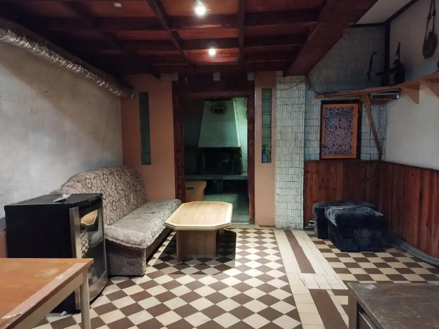
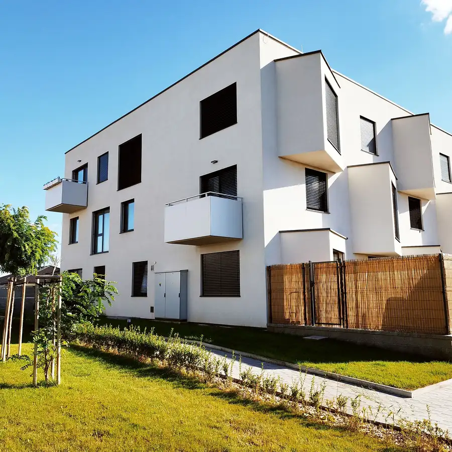

Kúpa 1. 2. 3 . 4 izbového bytu v Pezinku
Pezinok
- Dispozícia3-izbový
- StavČiastočná rekonštrukcia
O nehnuteľnosti
Máte na predaj v Pezinku a v okolí 1. 2. 3. 4. izbový byt alebo Garsónku?Hľadáme tieto nehnuteľnosti pre našich konkrétnych klientov.Dobrý deň prajeme.Sme vaša lokálna realitná kancelária a v tejto chvíli aktívne hľadáme uvedené bytytejto kategórie priamo v Meste Pezinok a v jeho okolitých prímestských obciach.V databáze máme klientov, ktorý chcú v tejto lokalite kupovať.A aj z tohto dôvodu sa na mňa obracajú záujemci o kúpu, ktorý sa spoliehajúna to, že im budem nápomocný s kúpou ich vysnívanej nehnuteľnosti.Aktuálne hľadáme pre našich klientov:- Novostavby byty na Muškáte, sídlisku sever a v centre- Staršie byty na severe, juhu, muškáte v centrePrečo predávať práve s nami? Kompletný právny servis:- Zabezpečíme bezpečné zmluvy našim advokátom a hladký prevod- peňazí bez akéhokoľvek vášho stresu.Špičkový marketing:- profesionálne fotenie a prednostná inzercia sú u nás samozrejmosťou- Bezplatné poradenstvo:- Nezáväzná trhová analýza ceny vašej nehnuteľnosti úplne ZADARMOTak nás neváhajte kontaktovať ešte dnes:- 0907 093 386 - WhatsApp- Roman Hržič konateľ spoločnosti- e-mail hrzic@carpatiareal.sk
Parametre
| Cena vrátane energií | Nie |
|---|---|
| Druh | 3 izbový byt |
| Dátum zverejnenia | 25. 8. 2026 |
| Stav nehnuteľnosti | Čiastočná rekonštrukcia |
| Typ | Kúpa |
| Úžitková plocha | 0 m² |
Kde to je


Mohlo by Vás zaujímať

DomNové10 359 990 €Rod. dom v Harmónii v malebnej prírode Malých Karpát s garážou, kolibou, bazénom a krásnym pozemkom - 1 545 m2 Modra 200 m² Z poverenia a v zastúpení p. majiteľky Vám naša Realitná spoločnosť predstavuje a ponúka na predaj túto zriedka ojedinelú a výnimočnú nehnuteľnosť na…
BytNové10 175 000 €NOVINKA - Moderný a zariadený 1. izbový byt s klimatizáciou a parkovacím státím v cene - Malý Raj - Slov. Grob Slovenský Grob 1-izbový31.63 m²1. podlažie -- Dobrý deň prajeme --* Naša Realitná spoločnosť vám ponúka na* predaj v obľúbenej a vyhľadávanej časti obce Slovenský Grob v* lokalite Malý Raj… DomNové4
Cena dohodouKúpa Rodinného domu v Pezinku a v okolí
Pezinok
Máte na predaj Rodinný dom v Pezinku a v okolí?Hľadáme rodinný dom pre našich konkrétnych klientov.Dobrý deň prajeme.Sme vaša lokálna realitná…
DomNové4
Cena dohodouKúpa Rodinného domu v Pezinku a v okolí
Pezinok
Máte na predaj Rodinný dom v Pezinku a v okolí?Hľadáme rodinný dom pre našich konkrétnych klientov.Dobrý deň prajeme.Sme vaša lokálna realitná…